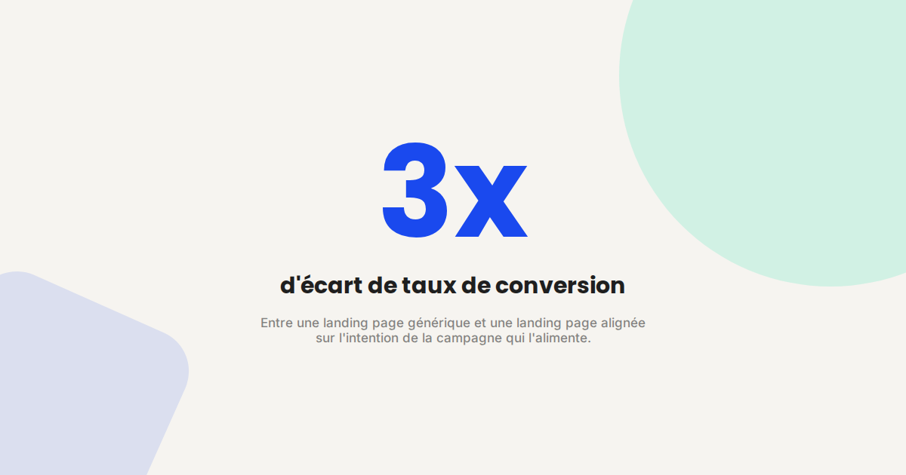
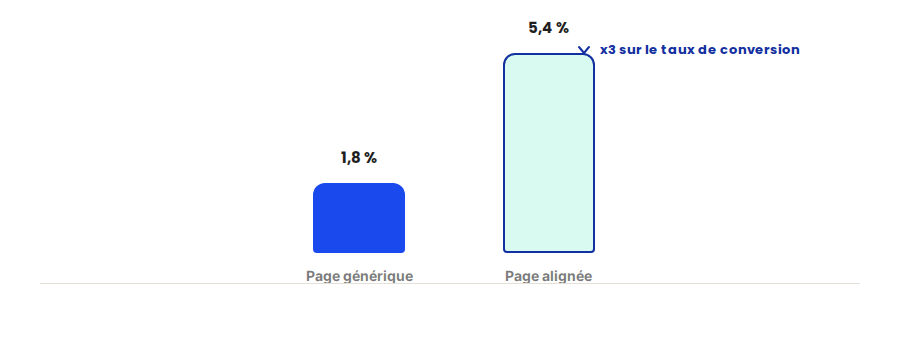

Landing page : les éléments qui font vraiment baisser le coût par lead
Doubler le budget publicitaire pour compenser une landing page qui convertit mal est l'erreur la plus coûteuse que je vois dans les audits que je mène. Le trafic n'est presque jamais le problème — la page qui le reçoit l'est. Voici les éléments qui font réellement baisser un coût par lead, par ordre d'impact.

Une landing page n'a qu'un seul travail : convaincre un visiteur qui vient de cliquer sur une annonce ou un lien de faire l'action attendue, sans le distraire ni le faire douter. C'est un exercice différent de celui d'une page de site classique, et la plupart des landing pages ratent parce qu'elles sont conçues comme des pages de site — avec un menu, plusieurs offres, plusieurs appels à l'action qui se dispersent.
Ce qui ne change pas
Le principe fondamental d'une bonne landing page reste le même depuis toujours : la cohérence entre la promesse du clic (l'annonce, le mail, le lien) et le contenu de la page. Sur ce point, la logique rejoint directement celle du CRO — chaque friction supplémentaire entre l'intention du visiteur et l'action demandée fait baisser le taux de conversion, quel que soit le canal d'acquisition utilisé pour amener ce trafic.
Ce qui fait vraiment la différence sur le coût par lead
- L'alignement message-annonce, avant tout le reste. Le titre de la landing page doit reprendre, presque mot pour mot, l'accroche de l'annonce qui a généré le clic — un décalage, même léger, crée un doute qui fait fuir une partie du trafic qualifié.
- Un seul objectif de conversion par page. Une page qui propose de télécharger un guide, de demander un devis et de s'abonner à une newsletter en même temps dilue l'attention et fait chuter le taux de conversion sur les trois actions à la fois.
- La preuve sociale au bon endroit, pas en bas de page. Un avis client, un logo, un chiffre concret positionné près du formulaire a un effet mesurable sur la conversion ; le même élément relégué en pied de page est simplement ignoré.
- La vitesse de chargement mobile, souvent négligée. Une landing page alimentée par du trafic publicitaire est majoritairement consultée sur mobile ; chaque seconde de chargement supplémentaire fait perdre une part significative des visiteurs avant même qu'ils aient vu l'offre.

Un exemple qui illustre bien la différence
Pour une campagne d'acquisition B2B qui redirigeait tout son trafic vers la page d'accueil du site, la simple création d'une landing page dédiée reprenant l'accroche exacte de l'annonce, avec un seul formulaire et un témoignage client positionné juste au-dessus, a permis de faire baisser le coût par lead de façon nette en quelques semaines, sans toucher au budget média ni au ciblage de la campagne.
Ce qu'il faut faire concrètement
- Créez une landing page dédiée par campagne majeure, plutôt que de rediriger tout le trafic publicitaire vers une page générique du site.
- Reprenez littéralement l'accroche de l'annonce dans le titre de la page, pour éliminer tout décalage de perception au moment du clic.
- Réduisez chaque page à un seul objectif de conversion, avec un seul appel à l'action répété plusieurs fois plutôt que plusieurs actions différentes proposées une fois chacune.
- Testez l'ordre des éléments avant de tester leur design : la position de la preuve sociale a souvent plus d'impact que sa forme visuelle.
FAQ
Faut-il une landing page différente pour chaque annonce publicitaire ?
Pas pour chaque annonce individuellement, mais au moins pour chaque groupe d'annonces avec un message ou une cible distincte. L'important est l'alignement entre la promesse du clic et le contenu de la page, pas le nombre de pages créées.
Le design de la landing page compte-t-il moins que le message ?
Dans la plupart des audits, oui. Un message mal aligné avec l'intention du visiteur fait perdre plus de conversions qu'un design imparfait mais cohérent. Le design vient renforcer un message déjà juste, pas le remplacer.
Combien de temps faut-il pour voir l'effet d'une landing page dédiée ?
L'effet est généralement visible dès que le volume de trafic permet une lecture fiable du taux de conversion, souvent en quelques semaines pour une campagne avec un volume de clics suffisant.
Envie d'auditer vos landing pages actuelles ?
Pour aller plus loin, voir la page Optimisation landing page, la page CRO, et la page SEA.
Pour continuer sur ce sujet.